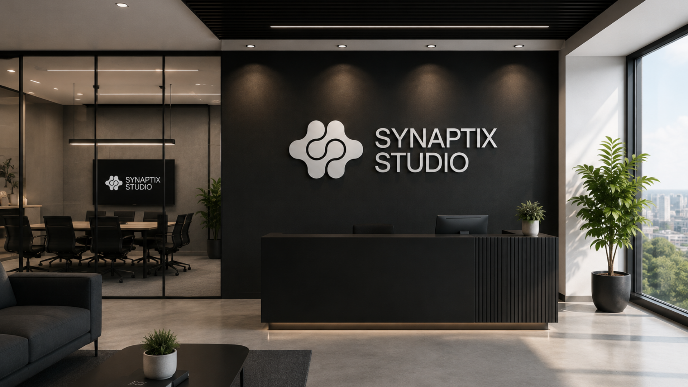
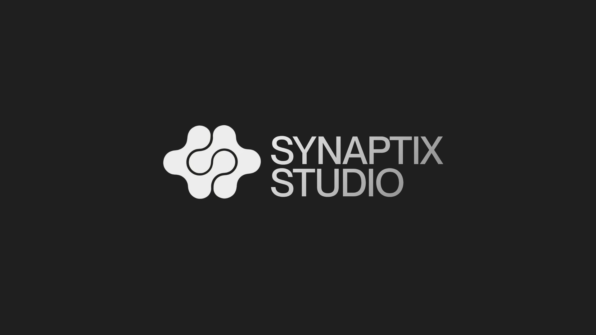
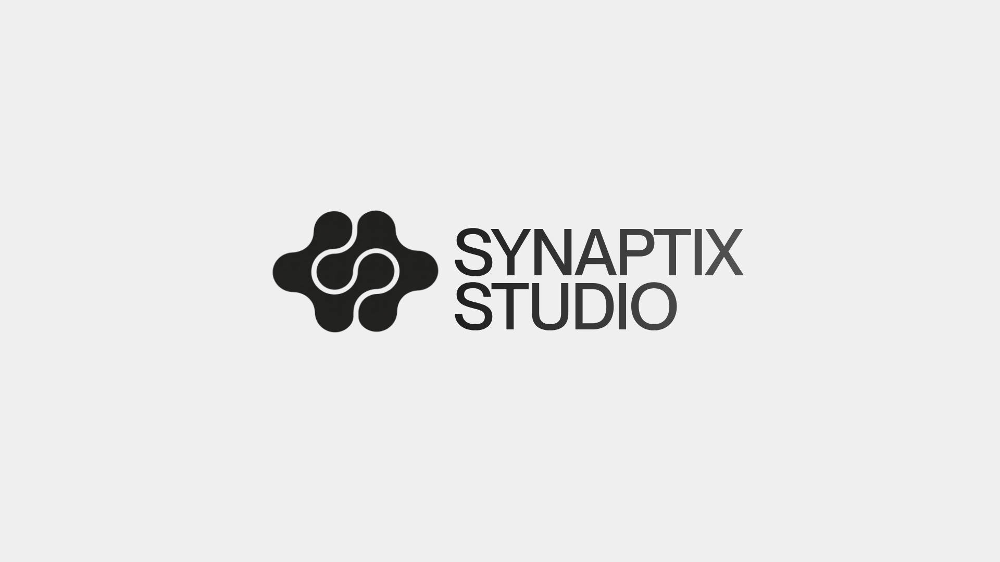
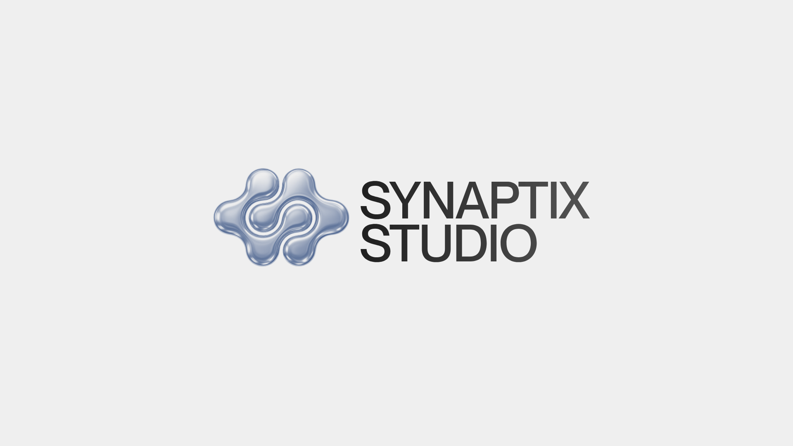
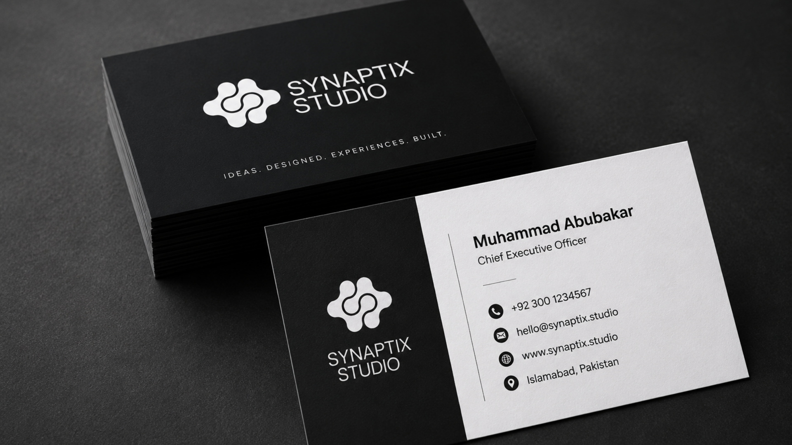
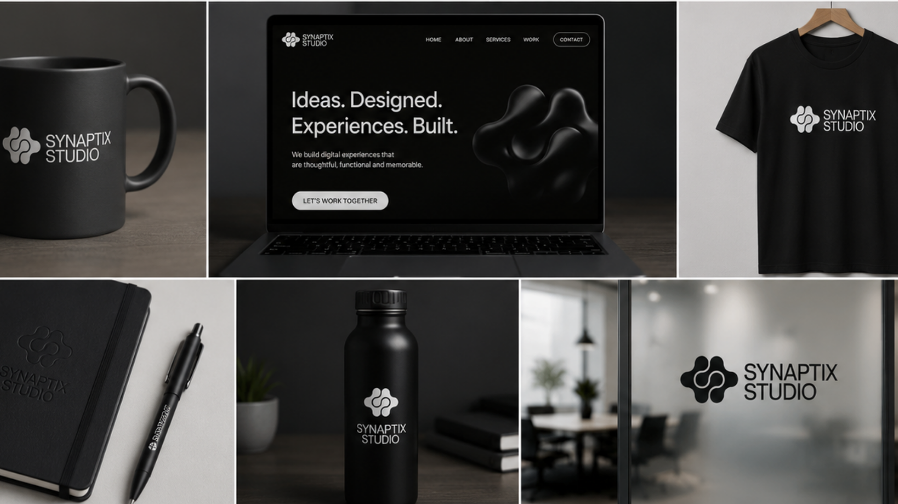
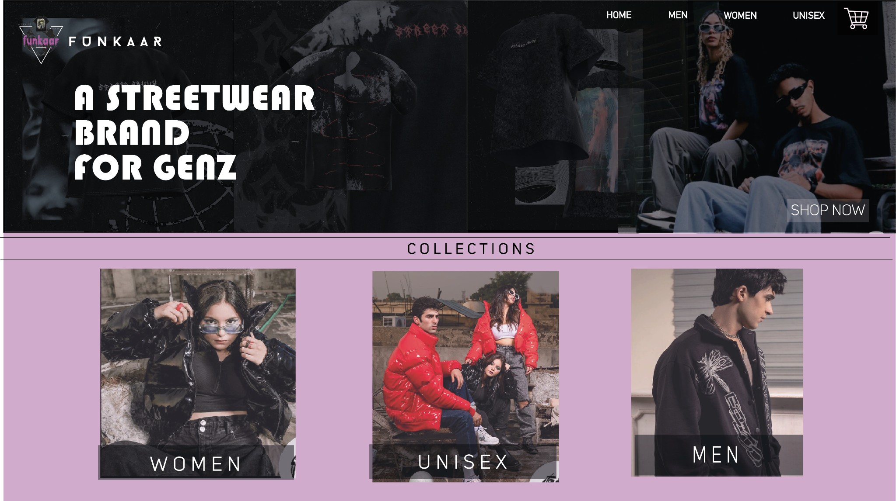
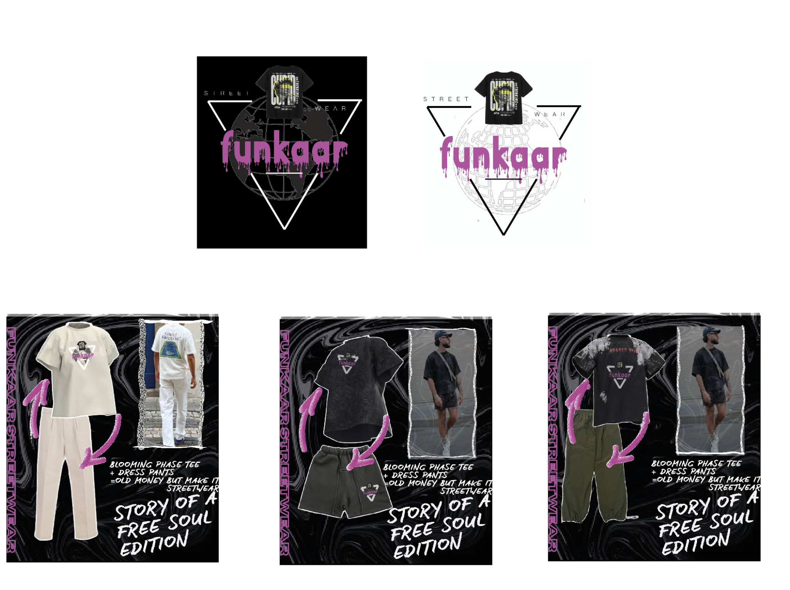
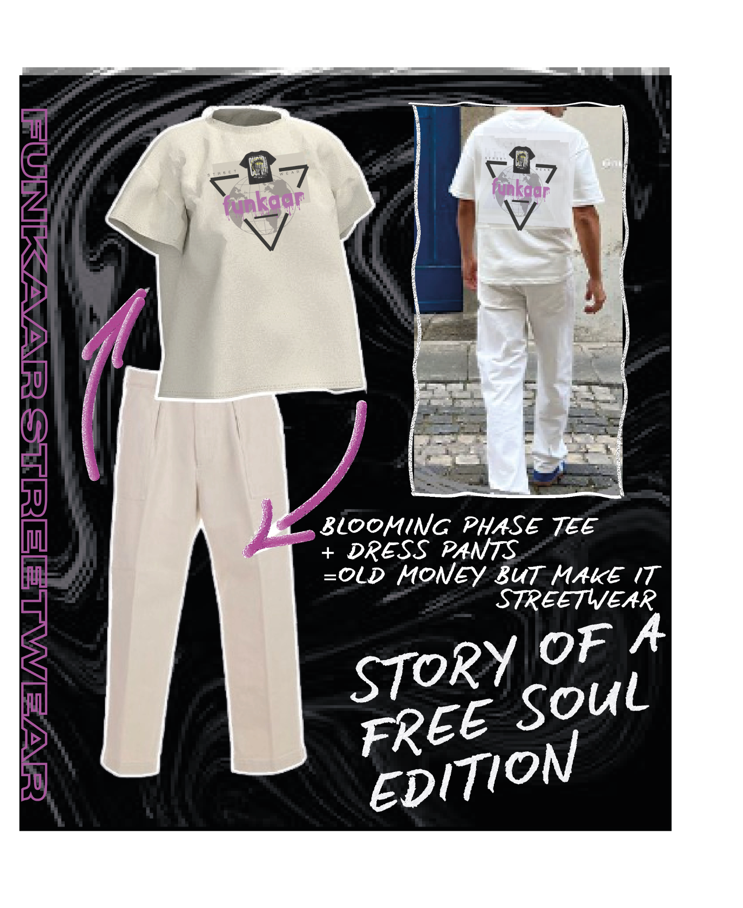
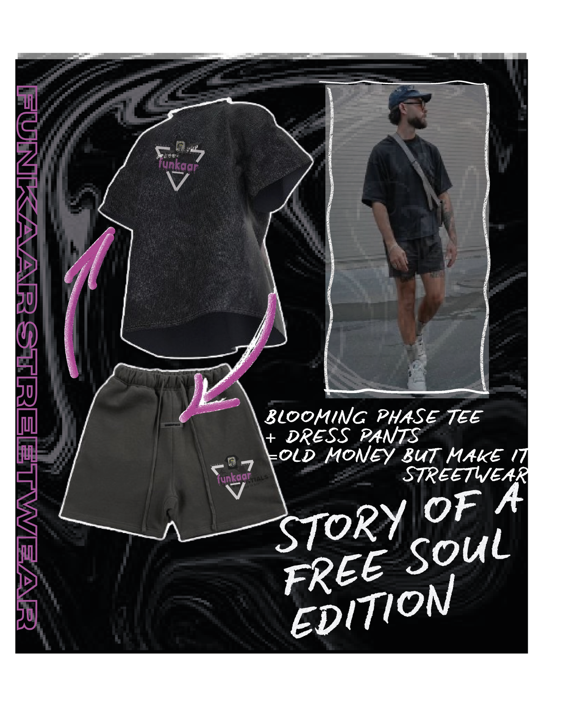

PROJECT / 02 — BRAND IDENTITY / ART DIRECTION
BUILT TO BE
REMEMBERED
Identity systems built to give ideas a distinct visual presence.
SELECTED WORK / 2026
01 / SYNAPTIX STUDIO
Minimal structure.
Memorable presence.
A monochrome identity for an AI automation and digital studio, built around a fluid mark, restrained typography and a premium black-and-white visual system.






SHIFT / 01 → 02
TWO BRANDS.
TWO WORLDS.
Same objective: build a visual identity people remember.
02 / FUNKAAR
Streetwear with
a louder pulse.
A Gen Z streetwear concept built through graphic tension, expressive typography, fashion-led art direction and a deliberately raw digital aesthetic.




← BACK TO WORK
FATIMA RAUF / PORTFOLIO